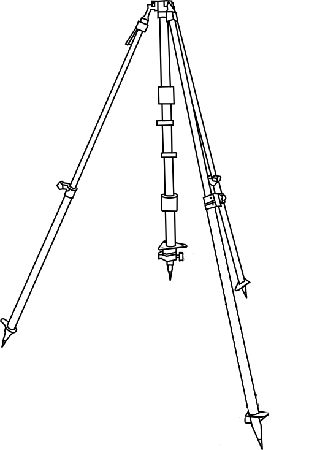
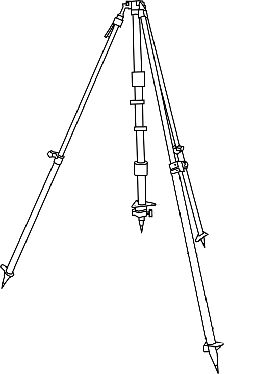

SETTING UP THE BASE STATION
Objective:
To learn the procedure of how to set up the base station in a DGPS survey.
Apparatus used:
DGPS base, Base tripod stand.


Description
Description Contents
Take out the tripod stand to set it over the required point. Fix the tip for the central stand.


Unclamp the tripod legs and increase the leg length to the required height and tighten the clamps again.


 



Same way all legs are set
Now position the tripod over the required point and release the central stand to touch the ground.


Using the adjustment springs, bring the bubble to the centre to make it truly vertical.


Insert the battery in the battery slot provided in the base head.


Now attach the rod and the base head to the levelled tripod.


Note down the height of the instrument shown by the graduated middle stand and add 25cm (height of rod) to this reading to get the actual height of the instrument.

Height of the instrument is:
1.46m + 0.25m = 1.71m
Both ends of the pipe must be trimmed to ensure parallel faces.